Ein kompakter „Jetzt verwenden“-Bereich macht den Bestand nützlich, ohne Suche und Lagerorte zu entfernen.
Fam · UI-Inspiration
Online-Muster für einen ruhigeren, nützlicheren Bestand.
Lokale Screenshot-Sammlung aus öffentlich zugänglichen Produktgalerien und veröffentlichten App-Previews. Die Bilder sind Referenz, keine zu kopierenden Produkt-Assets.
Inventar und Priorität
Wie andere Produkte den Bestand auffindbar und handlungsorientiert machen.
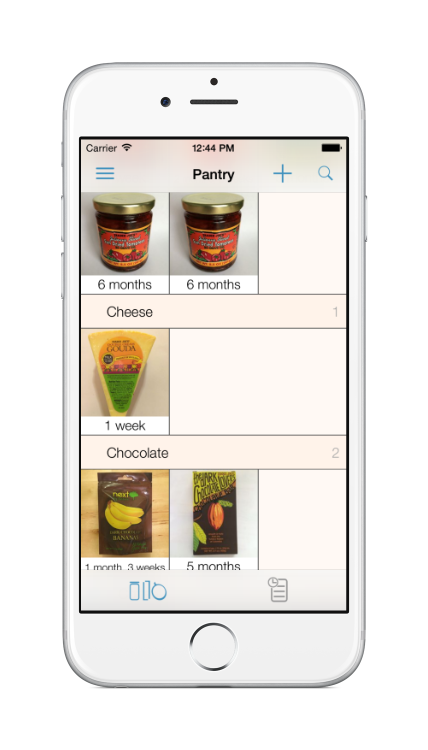
Kategorien, Produktbilder und eigene Ablauf-/Timeline-Flächen. Idee: aktiver Bestand und Verlauf trennen.
Quelle öffnen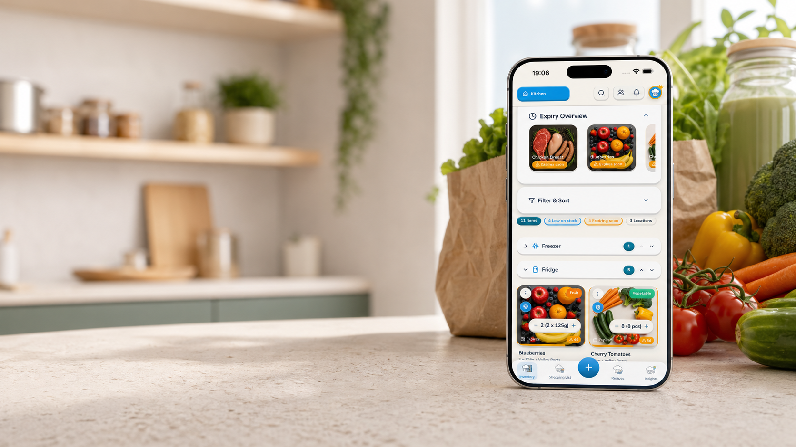
Eine kompakte Ablaufübersicht vor der vollständigen Inventarliste. Idee: Dringlichkeit als Einstieg, nicht als Sortieroption.
Quelle öffnen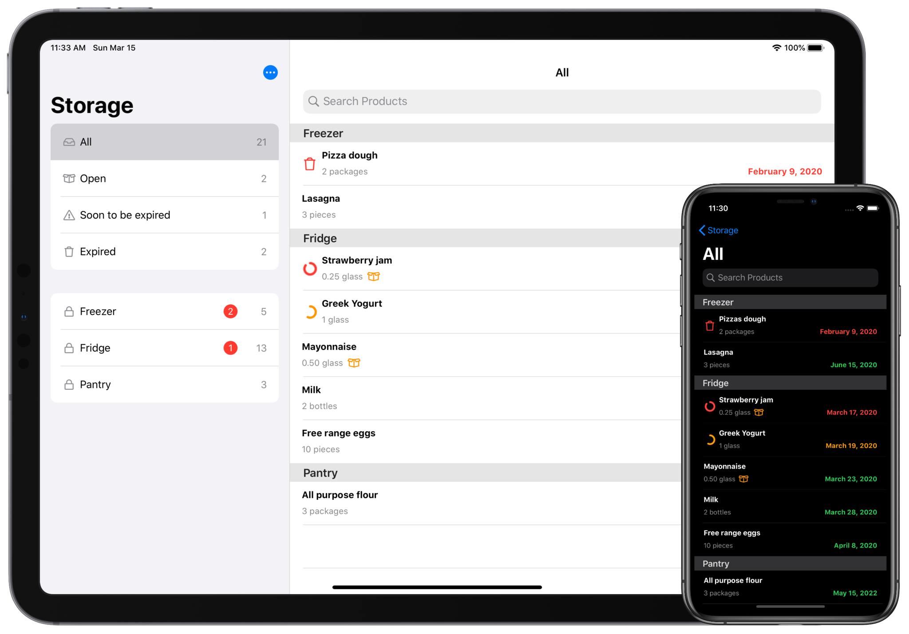
Smart Lists und Timeline machen „bald verbrauchen“ zu einem eigenen Nutzungsmoment.
Quellennachweis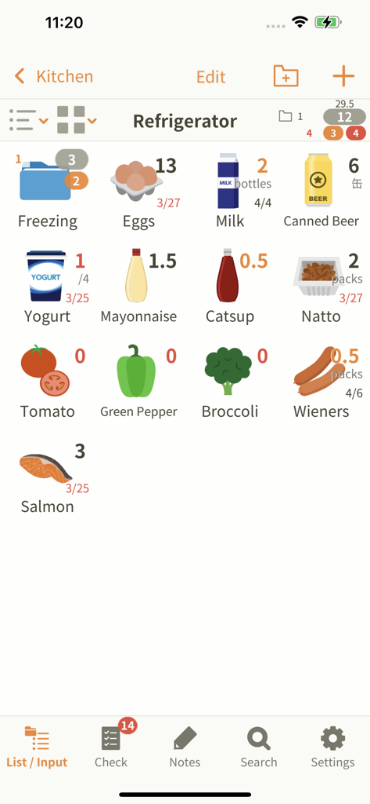
Physische Orte und Teilmengen nebeneinander. Idee: Lagerort bleibt die schnelle Wiederfindehilfe.
Quellennachweis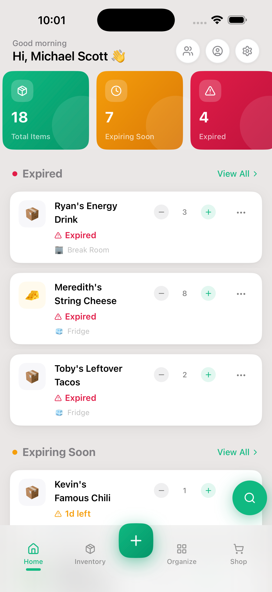
Bestand, Ablauf und Einstieg in einer mobilen Home-Surface. Idee: eine kleine „Jetzt“-Schicht vor der Liste.
Quelle öffnen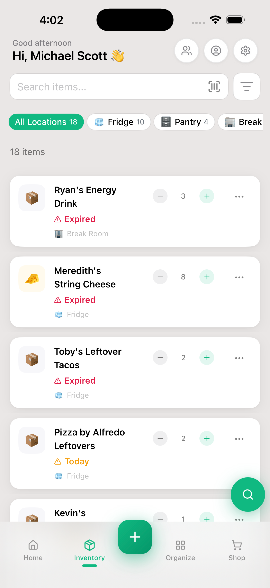
Vollständige Liste mit Ablaufdaten und Ortsbadges. Idee: zweite Ebene für Suche und Kontrolle.
Quelle öffnen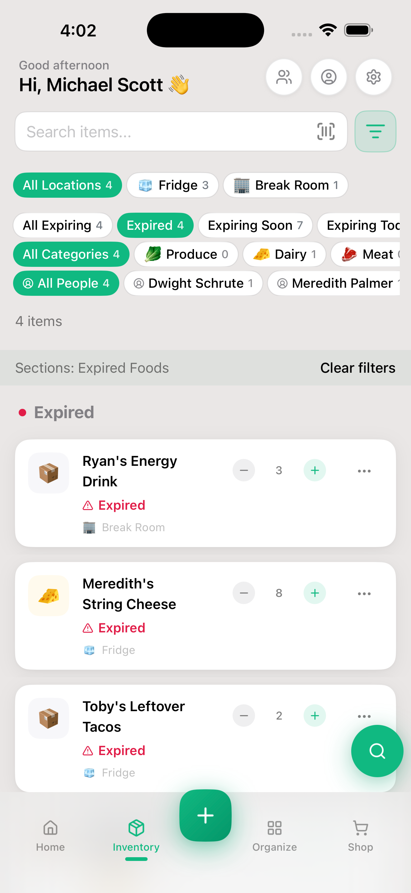
Ein fokussierter Filter für vergangene Daten. Idee: Statusfilter als temporäre Aufgabe, nicht als globale Stimmung.
Quelle öffnen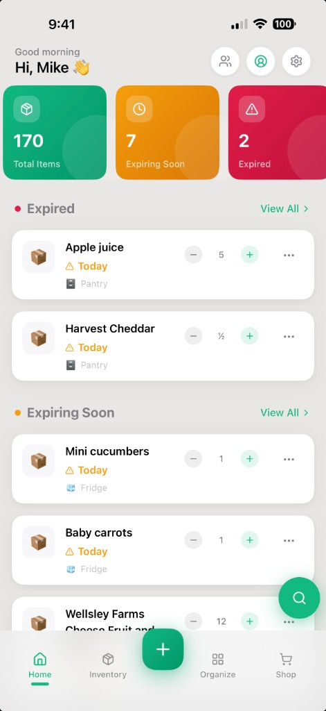
Die Produktgalerie zeigt, wie stark ein Home-Dashboard als Produktversprechen funktioniert.
Quelle öffnen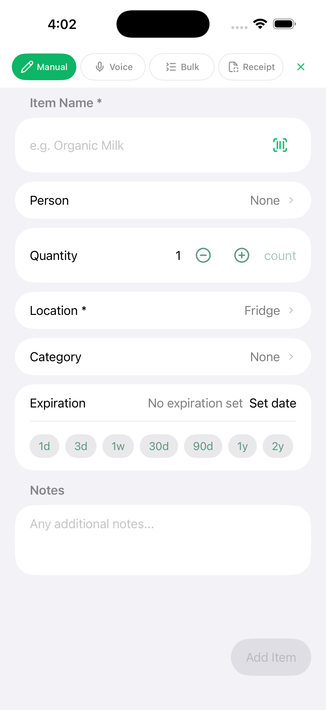
Die Eingabe bündelt Name, Menge, Ort und Datum. Idee: Pflichtumfang klein halten, Details nachgelagert öffnen.
Quelle öffnenEinkauf und Haushalt
Wie gemeinsame Listen Aktionen, Mengen und Zugehörigkeit sichtbar machen.
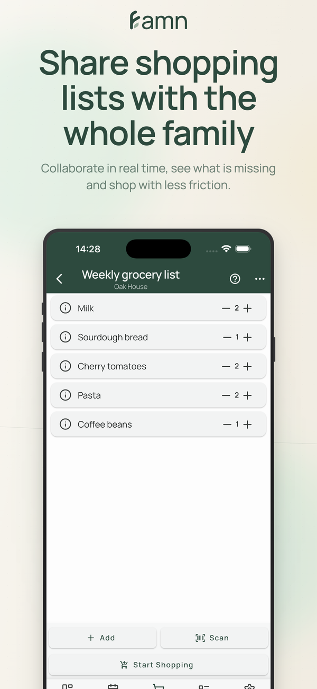
Plus/Minus, gemeinsame Liste und Start-Shopping-Aktion. Idee: Mengen nicht erst im Detail bearbeiten.
Quelle öffnen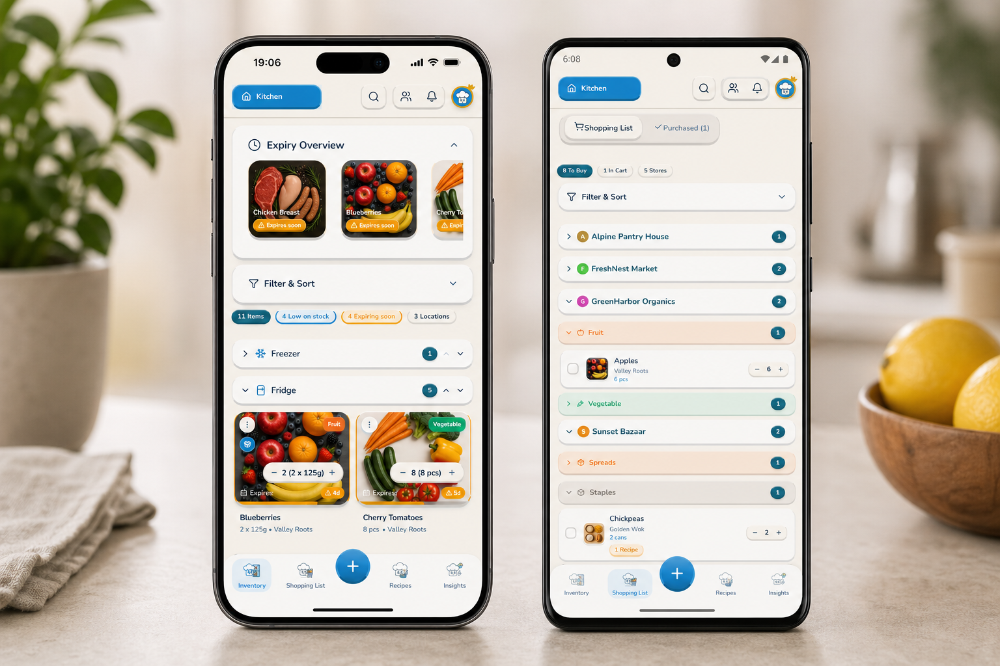
Getrennte Flächen für Inventar und Einkauf. Idee: gemeinsame Datenbasis, aber unterschiedliche Modi.
Quelle öffnen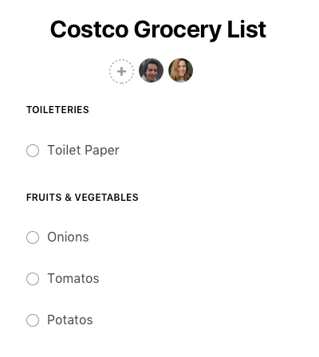
Schlichte Gruppierung und Checkboxen. Idee: Einkauf darf eine sehr reduzierte Oberfläche behalten.
Quelle öffnenÜbertragbare Prinzipien
Die Screenshot-Sammlung führt zu drei konkreten Richtungen für den nächsten Fam-Prototyp.
„Verbrauchsdatum heute“, „MHD morgen“, „geöffnet“ und „kein Datum“ brauchen unterschiedliche Sprache.
Person, Zeit, Mengenänderung und Undo reichen für Vertrauen. Ein globaler Aktivitätsfeed ist nicht nötig.